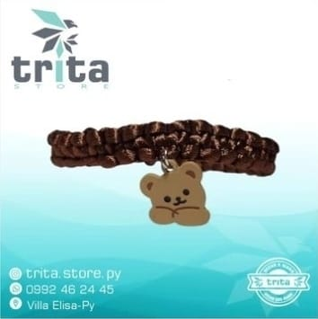

Pulsera de pochaco
-Pulsera con dije de pochacco de sanrio(El color del hilo a elección)-
Podemos hacer los que nos pidas :)
Pide ahora tus pulserasHace tus pedidos a nuestro instagram, tienes que hacer tus pedidos especificamente del color del hilo, el grosor, y lo que tiene que tener
-Pulsera con dije de pochacco de sanrio(El color del hilo a elección)-
-Pulsera con dije de una mancuerna(El color del hilo a elección)-
-Pulsera con dije de un timon de barco(El color del hilo a elección)-
-Pulsera con dije de una clabera(El color del hilo a elección)-
-Pulsera con dije el de un osito(El color del hilo a elección)-
-Pulsera con un dije de avion de papel con detalles rojos ✈️ (El color del hilo a elección)-